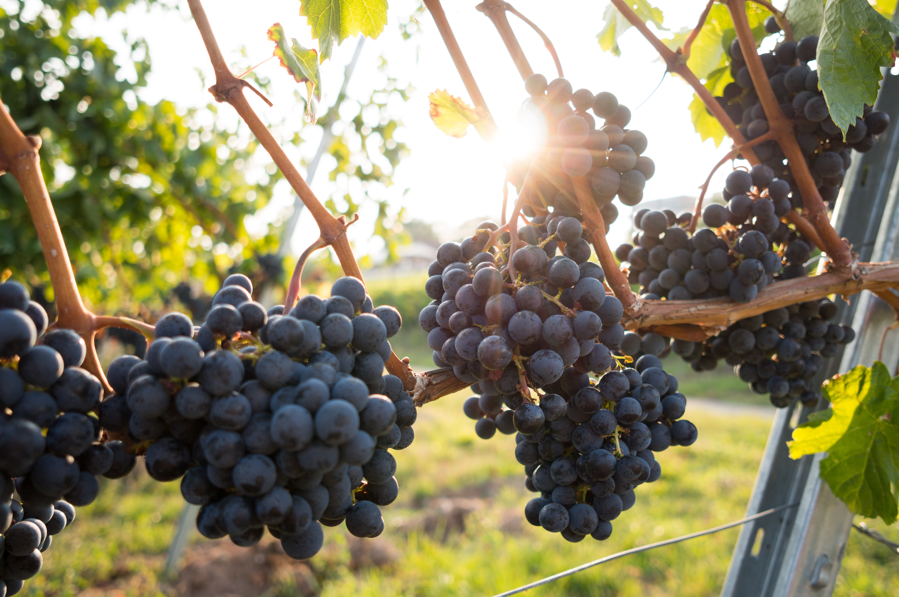

포도(葡萄, grape)는 포도속(Vitis) 식물의 총칭, 또는 그 열매를 말한다. 포도의 품종에는 포도(V. vinifera)·미국포도(V. labrusca)·교배종이 있다. 포도(V. vinifera)는 전파 과정에 따라 남유럽계·중앙아시아계·동아시아계 등의 재배형으로 분화하였으며, 오늘날까지 총 15만 여 품종이 만들어졌다. 패도(孛桃)라고도 한다.포도 열매는 가공되지 않은 상태로도 먹을 수 있는 과일이며, 포도주, 주스, 젤리 등을 만드는 데에도 사용된다. 건포도를 만들어 사용하기도 한다. 흔히 볼 수 있는 보라색의 포도 외에도 붉은색, 흰색, 녹색 등 다양한 색의 종이 있다.

| 구분 | 함량 | 단위 | RDA% |
| 칼슘 | 6.0 | mg | 0.9 |